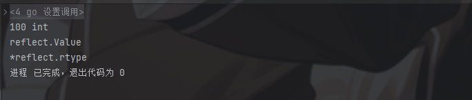

# 前言go 语音作为一门编译型语言，无需任何依赖环境，并由于其优良的并发性和强大的原生包，我们安全开发选择 go 语言作为主语言，是一个不错的选择
# reflect# 基础理解在 reflect 中有两个重要函数和相应的类型
ValueOf ---- value TypeOf ---- type
1 2 3 4 5 6 7 8 9 10 11 12 13 14 15 package mainimport ( "fmt" "reflect" ) func main () var a int = 100 of := reflect.ValueOf(a) typeOf := reflect.TypeOf(a) fmt.Println(of, typeOf) fmt.Printf("%T\n%T" , of, typeOf) }

可以看到输出结果，输出结果和类型
他们本身也有各自的调用方法，我这里只举例一些常用的
reflect.Value.Type()
1 2 3 4 5 6 7 func main () var a int = 100 of := reflect.ValueOf(a) fmt.Println(of.Type()) }
获取数据定义类型名
reflect.Value.Kind()
1 2 3 4 5 6 7 func main () var a yuanshen = 100 of := reflect.ValueOf(a) fmt.Println(of.Kind()) }
获取数据底层类型名称
reflect.Value.Elem()
1 2 3 4 5 6 7 8 9 func main () var a yuanshen = 100 of := reflect.ValueOf(&a) fmt.Println(of) fmt.Println(of.Elem()) }
这里我们 ValueOf 获取的是 a 的地址值，因此输出的是 a 指针的反射值，这里我们调用 Elem 获取的才是 a 指针指向的值的反射值
reflect.Value.Canset()
1 2 3 4 5 6 7 8 9 10 11 12 func main () var a yuanshen = 100 valueOf := reflect.ValueOf(a) of := reflect.ValueOf(&a) fmt.Println(valueOf.CanSet()) fmt.Println(of.CanSet()) fmt.Println(of.Elem().CanSet()) }
函数作用就是检验这个反射值是否我们可以修改
第一个 false 是因为我们获得是 a 的拷贝值，进行修改也无法修改 a 本身的值
第二个 false 是因为我们取得是 a 的指针的反设值，进行修改相当于改地址，而不是改值
第三个 true 是因为我们获取的是 a 的指针指向的值得反射值
reflect.Indirect()
1 2 3 4 5 6 7 8 9 10 func main () var a = 1 of := reflect.ValueOf(&a) indirect := reflect.Indirect(of) fmt.Println(of.CanSet()) fmt.Println(indirect.CanSet()) }
无需 Elem，直接根据指针反射值找寻到指针指向的值，可用于多级指针使用
reflect.Value.Set()
1 2 3 4 5 6 7 8 func main () var a yuanshen = 100 of := reflect.ValueOf(&a) of.Elem().SetInt(200 ) fmt.Println(a) }
设置新值
reflect.Type.Elem()
1 2 3 4 5 6 7 func main () a := []int {1 , 2 , 3 , 4 , 5 , 6 , 7 , 8 , 9 , 10 } of := reflect.TypeOf(a) fmt.Println(of.Elem()) }
获取切片元素类型，接口，结构体同样使用
# 高级用法获取 struct 信息的一些方法：
NumField () 获取结构体字段数量 Field (i) 可以通过 i 字段索引来获取结构体字段信息，比如 Field (i).Name 获取字段名 FieldByName (name) 通过 name 获取字段信息 MethodByName () 获取的是与指定方法名相关联的反射方法 Call () 实例化反射方法
1 2 3 4 5 6 7 8 9 10 11 12 13 func main () p := yuanshen{"paimeng" , 3 , 10 } of := reflect.ValueOf(&p) for i := range of.Elem().NumField() { fmt.Println(of.Elem().Field(i)) } of.MethodByName("Sing" ).Call([]reflect.Value{reflect.ValueOf("oh,baby" )}) }
reflect.SliceOf (t) 创建一个切片类型，其元素类型为 t reflect.MakeSlice () 创建一个指定类型的空切片 reflect.New (t) 创建一个 t 类型实例，并返回指针 reflect.Append (slice, newP2) 将新元素追加到切片
1 2 3 4 5 6 7 8 9 10 11 12 13 14 15 16 17 18 19 20 21 22 23 24 25 26 27 28 func main () p := yuanshen{"paimeng" , 3 } t := reflect.TypeOf(p) slice := reflect.MakeSlice(reflect.SliceOf(t), 0 , 0 ) newP1 := reflect.New(t).Elem() newP1.FieldByName("name" ).SetString("xinxin" ) newP1.FieldByName("age" ).SetInt(5 ) newP2 := reflect.New(t).Elem() newP2.FieldByName("name" ).SetString("dalaoyang" ) newP2.FieldByName("age" ).SetInt(100 ) slice = reflect.Append(slice, newP1) slice = reflect.Append(slice, newP2) for i := 0 ; i < slice.Len(); i++ { fmt.Printf("切片元素 %d: %+v\n" , i, slice.Index(i).Interface()) } }